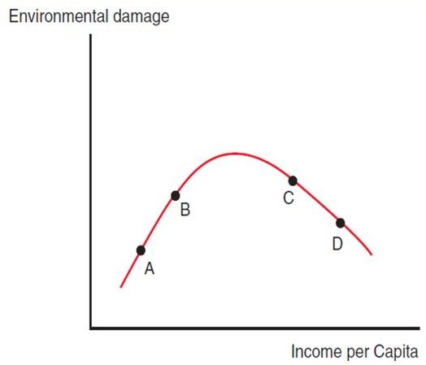
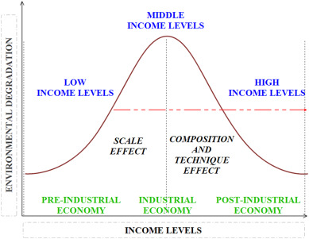
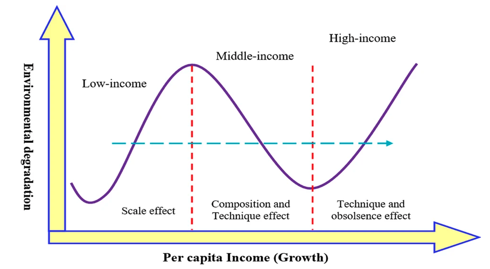
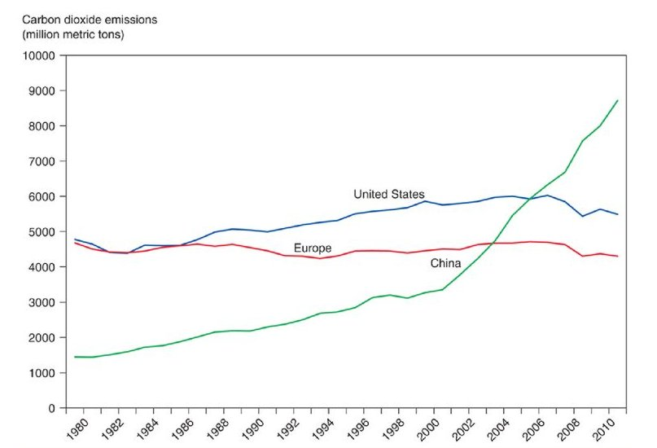

7 Globalization and the Environment
Concerns about human impacts on the environment are growing in much of the world. In turn, these concerns are playing a growing role in domestic politics. environmental issues are playing a growing role in disputes about international trade as well. Some anti-globalization activists claim that growing international trade automatically harms the environment; some also claim that international trade agreements—and the role of the World Trade Organization in particular—have the effect of blocking environmental action.
Most international economists view the first claim as simplistic and disagree with the second. That is, they deny that there is a simple relationship between globalization and environmental damage and do not believe that trade agreements prevent countries from having enlightened environmental policies. Nonetheless, the intersection of trade and the environment does raise a number of important issues.
7.1 The Environmental Kuznets Curve (EKC)
7.1.1 The inverted U-shaped EKC
- Empirical evidence suggests that as economies grow, they initially do increasing environmental damage–but they become more environmentally friendly once they become sufficiently rich. China, where the environment is deteriorating as the economy expands, is in effect moving from A to B. Richer countries may be moving from C to D, using some of their growth to improve the environment.

In the early 1990s, Princeton economists Gene Grossman and Alan Krueger, studying the relationship between national income levels and pollutants such as sulfur dioxide, found that these offsetting effects of economic growth lead to a distinctive “inverted U” relationship between per-capita income and environmental damage known as the environmental Kuznets curve. This concept, whose relevance has been confirmed by a great deal of further research, is illustrated schematically in Figure 9a.
The idea is that as a country’s income per-capita rises due to economic growth, the initial effect is growing damage to the environment. Thus, China, whose economy has surged in recent decades, is in effect moving from point A to point B: As the country burns more coal in its power plants and produces more goods in its factories, it emits more sulfur dioxide into the air and dumps more effluent into its rivers.
But when a country gets sufficiently rich, it can afford to take action to protect the environment. As the United States has grown richer in recent decades, it has also moved to limit pollution. For example, cars are required to have catalytic converters that reduce smog, and a government-licensing scheme limits emissions of sulfur dioxide from power plants. In terms of Figure 9a, the United States has on some fronts, such as local air pollution, moved from C to D: growing richer and doing less damage to the environment. Figure 9b shows different stages of EKC.

7.1.2 The N-shaped EKC
Scholars supporting N-shaped EKC have proposed a different theory. They believed that even at a higher stage of economic development if innovation cannot keep up with the speed of economic growth and the increase in technological effects is slower than the scale effect, environmental pollution may reappear (Lorente and Álvarez-Herranz, 2016).
In other words, the shape of the EKC may extend from an inverted U-shape to an N-shape. This N-shaped model assumes that economic growth leads to environmental degradation that reverses with economic progress after reaching a positive peak and that pollution levels approach a negative peak before starting to rise again with further economic progress.

7.2 What does Kuznet Curve have to do with international trade?
Trade liberalization is often advocated on the grounds that it will promote economic growth. To the extent that it succeeds in accomplishing this end, it will raise per-capita income. Will this improve or worsen environmental quality? It depends which side of the environmental Kuznets curve an economy is on. In their original paper, which was in part a response to critics of the North American Free Trade Agreement who argued that the agreement would be environmentally harmful, Grossman and Krueger suggested that Mexico might be on the right side of the curve—that is, to the extent that NAFTA raises Mexican income, it might actually lead to a reduction in environmental damage.
However, the environmental Kuznets curve does not, by any means, necessarily imply that globalization is good for the environment. In fact, it’s fairly easy to make the argument that at a world level, globalization has indeed harmed the environment—at least so far.
This argument would run as follows: The biggest single beneficiary of globalization has arguably been China, whose export-led economy has experienced incredible growth since 1980. Meanwhile, the single biggest environmental issue is surely climate change: There is broad scientific consensus that emissions of carbon dioxide and other greenhouse gases are leading to a rise in the Earth’s average temperature.
China’s boom has been associated with a huge increase in its emissions of carbon dioxide. Figure 9c shows carbon dioxide emissions of the United States, Europe, and China from 1980 to 2011. In 1980, China was a minor factor in global warming; by 2008, it was, by a substantial margin, the world’s leading emitter of greenhouse gases. It’s important to realize, though, that the problem here isn’t globalization per se—it’s China’s economic success, which has to some extent come as a result of globalization. And despite environmental concerns, it’s difficult to argue that China’s growth, which has raised hundreds of millions of people out of dire poverty, is a bad thing.

7.3 The Problem of “Pollution Havens”
When ships get too old to continue operating, they are disassembled to recover their scrap metal and other materials. One way to look at “shipbreaking” is that it is a form of recycling: Instead of leaving a ship to rust, a shipbreaking firm extracts and reuses its components. Ultimately, this salvaging means that less iron ore needs to be mined, less oil extracted, and so on. One might expect shipbreaking to be good for the environment. The task itself, however, can be environmentally hazardous: Everything from the residual oil in a ship’s tanks to the plastic in its chairs and interior fittings, if not handled carefully, can be toxic to the local environment.
Pollution is the classic example of a negative externality—a cost that individuals impose on others but don’t pay for. That’s why pollution is a valid reason for government intervention. However, different forms of pollution have very different geographical reach—and only those that extend across national boundaries obviously justify international concern.
Thus, to the extent that Indian ship breaking pollutes the local environment. this is a problem for India; it’s less clear that it is a problem for other countries. Similarly, air pollution in Mexico City is a problem for Mexico; it’s not clear why it’s a valid U.S. interest. On the other hand, emissions of carbon dioxide affect the future climate for all countries: They’re an international externality and deserve to be the subject of international negotiation.
References:
- Paul Krugman, Maurice Obstfeld, and Marc Melitz, International Trade: Theory and Policy, 11th edition.